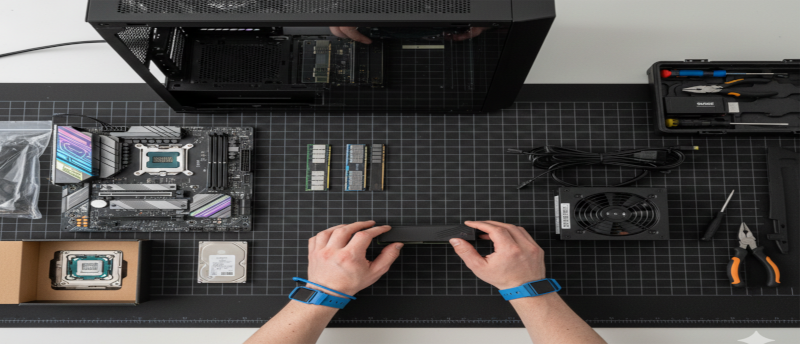
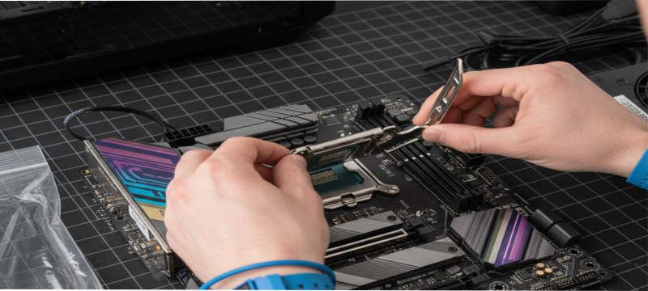
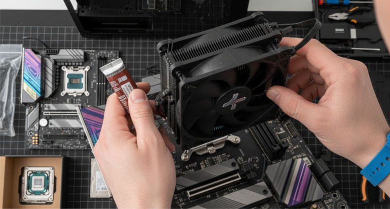
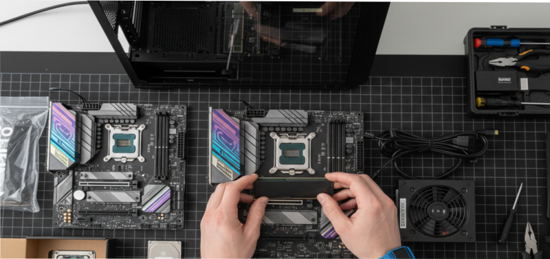
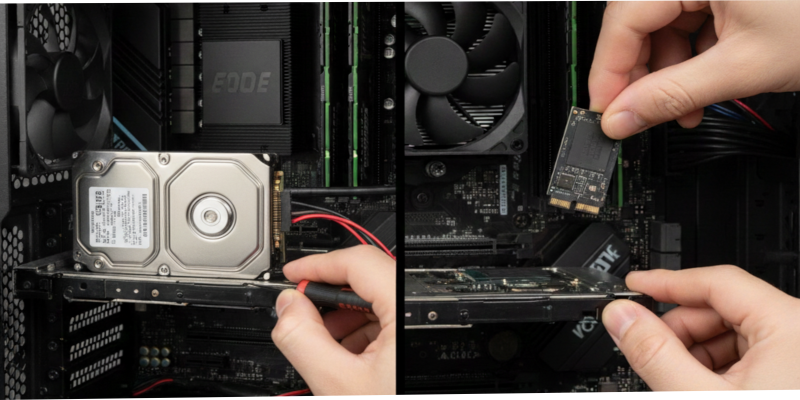
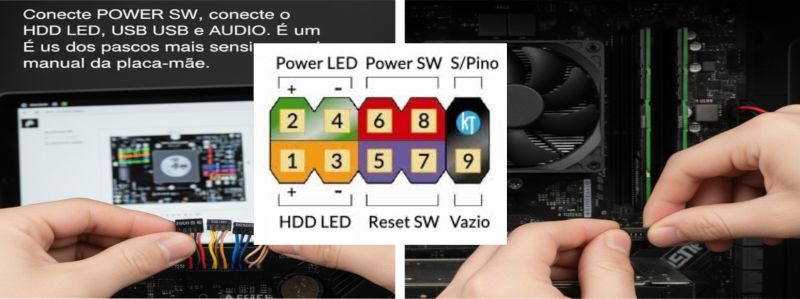

Preparação da Bancada
Antes de montar o computador, organize a bancada, descarregue a eletricidade estática,
separe ferramentas e verifique todos os componentes necessários:
placa-mãe, CPU, RAM, SSD/HD, fonte e gabinete.

Instalação do Processador
Abra a trava do soquete, alinhe a seta dourada do processador e coloque no encaixe sem forçar.
Feche a trava e prepare para instalar o cooler.

Instalação do Cooler
Aplique uma pequena gota de pasta térmica (grão de arroz) e fixe o cooler.
Conecte o cabo na porta CPU_FAN da placa-mãe.

Instalação da Memória RAM
Abra as travas do slot, alinhe o entalhe e pressione até ouvir os dois cliques.
Use Dual Channel sempre que possível para melhor desempenho.

Fixando a Placa-Mãe
Instale o espelho traseiro, alinhe a placa-mãe aos espaçadores e parafuse.
Organize os cabos para facilitar a circulação de ar.

Instalando a Fonte ATX
Fixe a fonte no gabinete e conecte os cabos principais:
24 pinos ATX e 4/8 pinos EPS da CPU.

Instalando SSD ou HD
SSD SATA: parafuse, conecte o cabo SATA e a energia SATA.
SSD M.2: encaixe a 30°, abaixe e parafuse.

Conexão do Painel Frontal
Conecte POWER SW, RESET SW, HDD LED, POWER LED, USB e AUDIO.
É um dos passos mais sensíveis — siga o manual da placa-mãe.

Primeira Inicialização e BIOS
Verifique: temperatura da CPU, reconhecimento da RAM, SSD/HD
e ajuste a sequência de boot.
Se tudo estiver OK, o PC está pronto para instalar o sistema!